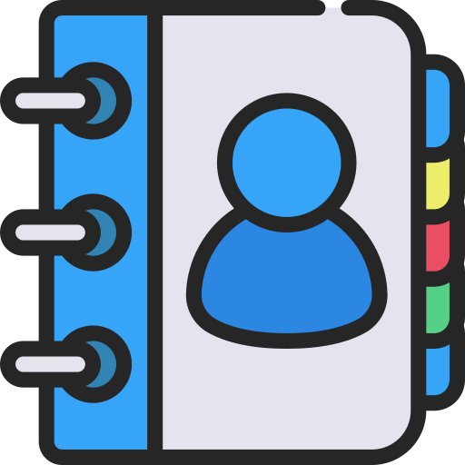

CONTACTS
Tell 0719370429
Email us Today
Social Pulse Hub
in all platforms
 ABOUT
ABOUT
An online social media dashboard tool for managing accounts performance from various platforms

 Facebook
Facebook Instagram
Instagram